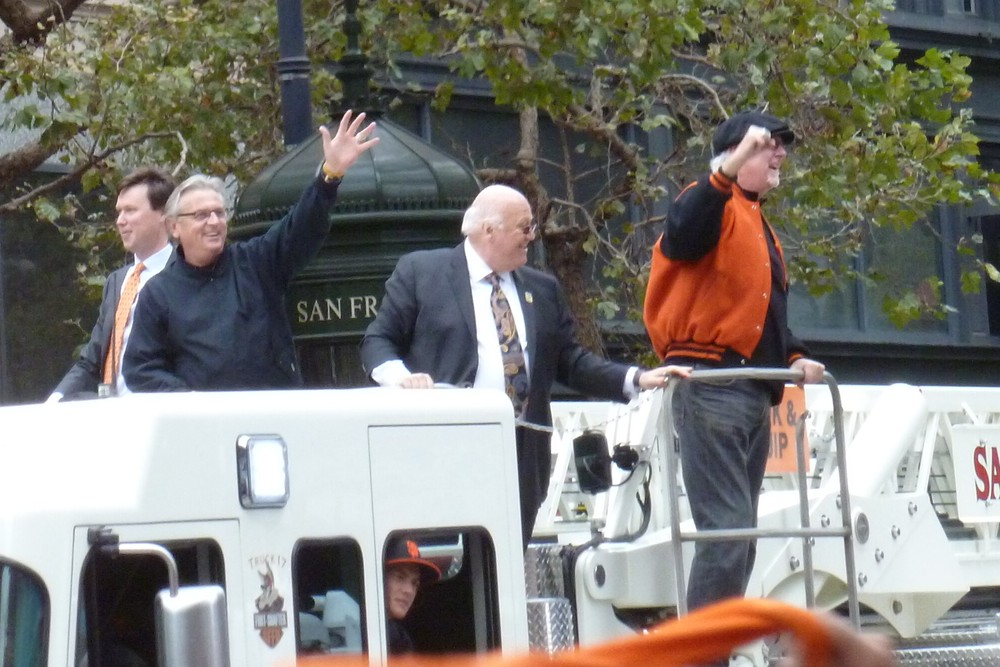
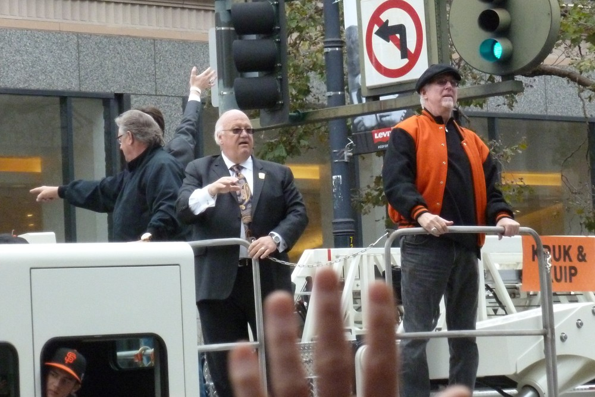

Jon Miller
The Hayward kid who stared at the broadcast booth through binoculars grew up to be the voice of every Giants summer since 1997.
The Jon Miller Story
Some guys are the voice of a team. Jon Miller is the sound of a Bay Area summer. The car radio on 101, the transistor in the garage, the game on low in the kitchen while somebody's doing dishes. If you grew up a Giants fan any time after 1997, his voice is wired into your memory of the whole thing, and it's been there so long you don't even notice it until you try to picture a game without it.
He was born October 11, 1951, and grew up in Hayward listening to Russ Hodges and Lon Simmons call the Giants. His first game at Candlestick came in 1962, when he was 10, against the Dodgers. He sat in the upper deck on the first base side, and he's told the story plenty of times: he spent the day with binoculars pointed at the broadcast booth, watching Russ and Lon more than the players. As a teenager he played Strat-O-Matic and called his own games into a tape recorder, crowd noise, vendors and commercials included.
After Hayward High in 1969 he took broadcasting classes at the College of San Mateo, where he called games on the school's radio and TV stations. By 20 he was the sports director at a TV station in Santa Rosa, and he'd sit in the Candlestick press box recording play by play of whole games for practice. One of those tapes got to Monte Moore, and in 1974, at 22, Miller was calling games for the Oakland A's. The defending champs. They won the World Series that year too, and then they let him go. Imagine that.
So he bounced. He called hockey for the California Golden Seals, college hoops for USF and Pacific, some Warriors games, and NASL soccer, including the 1976 championship game on CBS. Then baseball came back for good: the Texas Rangers in 1978 and 1979, the Red Sox from 1980 to 1982. He said the lure of doing baseball in Boston was too much to pass up, and he even turned up as a voice on the TV at the bar in an early episode of Cheers.
Baltimore made him a star. He took the Orioles radio job in 1983 and in his very first season called the last out of the World Series, Cal Ripken squeezing a line drive in Philadelphia. He spent 14 years there and was on the mic in 1995 when Ripken broke Lou Gehrig's consecutive games record. He called Baltimore the best thing that ever happened to him. Then after 1996 owner Peter Angelos didn't renew him, reportedly because Miller was too candid and Angelos wanted somebody who'd bleed more orange and black. Baltimore's loss. Huge, enormous, permanent Baltimore loss.
Because in 1997 he came home. He replaced Hank Greenwald as the Giants' lead play by play man on KNBR, did TV on KTVU and later NBC Bay Area, and called it coming full circle. The Hayward kid with the binoculars was now the guy in the booth.
And all the while he was the voice of baseball for the whole country. ESPN picked him as the first play by play man on Sunday Night Baseball in 1990, and he and Joe Morgan did that telecast for 21 seasons. He called 13 straight World Series on ESPN Radio from 1998 to 2010 and 16 World Series overall. Before that he'd done NBC's Game of the Week with Tony Kubek and Joe Garagiola. He wrote a book in 1998, Confessions of a Baseball Purist, and he's the guy who'll drop a Shakespeare line into the seventh inning and somehow make it fit.
In San Francisco he got the calls of a lifetime. Bonds' 71st in 2001. The Ruben Rivera baserunning catastrophe in 2003. Bonds' 756th in 2007. Then three championships, Pablo's three homers in Game 1 in 2012, and Sandoval squeezing the last out of 2014 in foul ground at Kauffman Stadium while Miller told the world Madison Bumgarner had etched his name into the record books.
The honors piled up. Two CableACE Awards, in 1991 and 1996. The National Sportscasters and Sportswriters Hall of Fame and National Sportscaster of the Year from the American Sportscasters Association, both in 1998. Then in 2010 the big one, the Ford C. Frick Award from the Hall of Fame, putting him in Cooperstown with Russ Hodges and Lon Simmons, the same two guys he'd watched through those binoculars. The Giants threw him a pregame tribute at AT&T Park that July, and he went into the Bay Area Radio Hall of Fame that year too, with his old College of San Mateo professor presenting him. The National Radio Hall of Fame followed in 2014, the College of San Mateo Hall of Fame in 2018, and he's got Northern California Emmys for his Giants TV work.
Then there's the stuff that only Miller does. He's famous for his Vin Scully impression, and he's done Scully in Japanese and Spanish, imitating the way foreign broadcasters sounded when they tried to copy Vin. He does Harry Caray and Bob Sheppard too. He pronounces players' names the way they say them at home, he'll toss in a Japanese or Hawaiian phrase, and when a Latino hitter goes deep it's Adios, pelota.
In 2025 he and the rest of the booth signed new multiyear deals, and 2026 was his 30th season as the voice of the Giants. It turned into an emotional one. Mike Krukow announced he'd retire after the season, and Miller said he tried to talk Kruk out of it. Then in September Duane Kuiper revealed a throat cancer diagnosis, and Miller slid over to the TV side to cover for him. On a Saturday night at Dodger Stadium he worked his first ever splitcast, with Kruk 400 miles away in the studio, and Kruk said he was fantastic. Two nights later at Oracle Park he got to needle Kruk on the air for stealing Kuip's home run call. He's 75 now, and he's still the voice we hear first.
What He Meant to Us
I can't tell you how many Giants games I've never actually seen. I heard them. In the car, in the yard, on a phone propped against something in the kitchen. And on almost every one of those nights, it was Jon Miller telling me what was happening, and honestly, he told it better than the TV ever could.
That's the thing about a radio voice. He's not describing the game, he is the game. When Bonds hit 756 I didn't need to see it, because Miller had already painted the boats in McCovey Cove and the crowd on Willie Mays Plaza, and then the ball was gone and I was yelling at nobody. In 2014, when Pablo caught that popup in foul ground, it's his voice I hear in my head. Not the TV call. His.
And he's ours. He's a Hayward kid who used to stare at Russ Hodges and Lon Simmons through binoculars, and he grew up and took their job and went into Cooperstown right next to them. How many fans actually get to do that? He's living the dream every single one of us had with a hairbrush microphone in our bedroom.
He makes me laugh, too, which is underrated. Buster Posey's good friend Hunter Pence. The worst base running in the history of the game. The Vin Scully impression, which is so good it's a little unsettling, and the Japanese Vin Scully, which I still can't believe is a real thing a real broadcaster does. He takes the game seriously and himself not at all, and that's exactly the right mix for 162 games.
This 2026 season made me love him more. Kruk's retiring. Kuip's fighting cancer. And there's Miller, 74 years old, doing his first splitcast ever from Dodger Stadium so the TV booth doesn't go dark, then talking about his partners like they're his brothers. He tried to talk Kruk out of retiring. Of course he did.
I don't want to think about the day he steps away. I'm not going to. Thirty seasons and counting, and every one of them sounded like summer in the Bay. Adios, pelota, Jon. Just not yet.
The Broadcast Career
- 1974
Oakland A's
His first big league job, calling A's games at 22. Gone after one season.
- 1974 to 1980
Soccer and college hoops
Washington Diplomats soccer, the 1976 NASL title game on CBS, then USF and Pacific basketball.
- 1978 to 1979
Texas Rangers
Back in baseball for good.
- 1980 to 1982
Boston Red Sox
Three seasons in Fenway.
- 1983 to 1996
Baltimore Orioles
Radio play by play. Called the last out of the 1983 World Series in his first year and Cal Ripken's 2,131st straight game in 1995.
- 1986 to 1989
NBC
Backup play by play on the Saturday Game of the Week.
- 1990 to 2010
ESPN
The first voice of Sunday Night Baseball, 21 seasons with Joe Morgan, plus World Series calls on ESPN Radio.
- 1997 to present
San Francisco Giants
Came home to replace Hank Greenwald. KNBR radio, with TV on KTVU from 1997 to 2007 and NBC Bay Area from 2008 to 2021. 2026 was season number 30.
In Pictures


The Signature Calls
Adios, pelota!
Goodbye, ball. His home run call for Latino hitters, and sometimes for anybody who really crushes one. When you hear it on KNBR you're already off the couch.
A grand slam for Buster Posey's good friend ... Hunter Pence.
The 2016 home opener against the Dodgers, when he started to credit Pence's slam to Posey and saved it mid sentence. Pence put it in his Twitter bio by the next morning.
That was the worst baserunning in the history of the game!
Ruben Rivera against Arizona, May 27, 2003. The fastest and most accurate review in Giants broadcasting history.
That ball is fooooul
The long, stretched out foul ball call. You can hear the extra o's from the parking lot.
Tell it goodbye!
His early home run call, borrowed out of love from Lon Simmons, the guy he grew up listening to.
your Giants broadcasters
How he signs on with his partners on KNBR. On TV it turns into your Giants telecasters, and it always feels like he's talking to you personally.
And Pablo Sandoval looks like The Babe himself has come back to life.
Game 1 of the 2012 World Series, after the Panda's third home run of the night.
Why We Love Him
He sounds like he's having more fun than anybody in the building, and it rubs off on you. There's a little laugh hiding in almost every Miller sentence. A blowout in August against a last place team still feels like a hang with him, because he'll find the weird stat, the Shakespeare line, the story about an umpire's name that sounds like an old time musician, and suddenly you're listening to the bottom of the eighth of an 11 to 2 game like it matters.
And when it does matter, nobody's better. He doesn't scream for the sake of screaming. He lets the moment get big on its own and then he meets it. Listen to 756, how he sets the whole scene, the armada of boats out in McCovey Cove, everybody standing at 24 Willie Mays Plaza, and then the crack. Or 2014, when the call ends with him putting Bumgarner on the list of the greatest World Series pitchers ever. That's exactly what all of us were thinking. He just said it first and said it better.
He's ours, too. That's a big part of it. He's a Hayward kid who came up listening to Russ and Lon, and he came back to do the job they did. When he says your Giants broadcasters, you believe him, because he grew up in the same seats we did.
And the man is a delight. The Scully impression. Doing Scully in Japanese. Buster Posey's good friend Hunter Pence. Calling Ruben Rivera's trip around the bases the worst base running in the history of the game, which, to be fair, it was. Giants fans quote him to each other the way other people quote movies.
What got me in 2026 was how he showed up for the guys next to him. Kruk was retiring, Kuip was fighting cancer, and Miller, at 74, went and did a splitcast for the first time in his life, from Dodger Stadium, so the TV booth wouldn't miss a beat. He talked about them like family, because that's what they are. That's the booth we love, and he's the head of it.
The Calls We'll Never Forget
- October 16, 1983
Ripken catches it, the Orioles are champions
His first season in Baltimore and he gets a World Series clincher. Game 5 in Philadelphia, and Miller set it up perfectly: the cheering you hear is from Oriole fans, everybody else is in muted silence. Then a line drive, Cal Ripken caught it at shortstop, and the Orioles were champions of the world. Twelve years later he was on the air again when Ripken broke Gehrig's record.
- October 5, 2001
Number 71
Barry Bonds against the Dodgers at Pac Bell Park, chasing Mark McGwire's single season record. Bonds hit it to the deepest part of the yard, over the 421 foot marker in right center, and Miller let it rip: NUMBER 71! Barry Bonds was the home run king, and the kid from Hayward got to say so.
- May 27, 2003
The worst base running in the history of the game
Against Arizona, Ruben Rivera turned two Diamondbacks errors into a comedy routine, making at least three separate baserunning mistakes on one play before he was thrown out at home trying to score the winning run. Miller's verdict was instant and perfect, and SportsCenter and sports radio played it over and over. It might be the most quoted thing he's ever said.
- August 7, 2007
756
Full count. Miller set the scene like a novelist: everybody standing at 24 Willie Mays Plaza, an armada of nautical craft out in McCovey Cove, Bonds one home run away from history. Then a long one into right center, gone, into the bleachers left of the 421 foot marker, and Barry Bonds had more home runs than anyone who's ever played the game. Miller had called Bonds' 71st too. He was there for all of it.
- October 24, 2012
The Babe himself has come back to life
Game 1 of the World Series at AT&T Park. Pablo Sandoval took Justin Verlander deep twice and then went deep a third time in his third at bat, a drive to center that Austin Jackson chased to the wall. Miller's call ended with Sandoval looking like the Babe himself had come back to life. Three homers in a World Series game, and the Giants were on their way to a sweep of Detroit.
- October 29, 2014
Third time in five years
Game 7 in Kansas City, the tying run on third, Madison Bumgarner on two days' rest going for his fifth inning of relief. A popup, Sandoval drifting down the line in foul ground with plenty of room, and he's got it. Miller called the Giants champions for the third time in five years and put Bumgarner right where he belonged, as one of the greatest World Series pitchers the game has ever seen.
- June 9, 2015
Heston's no-hitter at Citi Field
Chris Heston, a rookie, had the Mets hitless into the ninth in New York, and he struck out the side to finish it. Miller had the radio call of the final out. Nobody saw Heston coming, and that's always the best kind of no-hitter.
- September 19, 2026
The first splitcast, for his friends
With Duane Kuiper out and about to reveal his throat cancer diagnosis, Miller filled in on the NBC Sports Bay Area telecast at Dodger Stadium while Mike Krukow worked from the studio nearly 400 miles away. He'd never done a splitcast in his life. Kruk told him before the game that he'd drop off if they stepped on each other, and afterward said Jon was fantastic. A week later Kruk called his final game, and the booth never missed a beat getting him there.
The Highlights
What They Said About Miller
“That's like coming full circle.”
“I learned the game on the radio.”
“You have to give the fans the game, and if it's a Giants broadcast, the vast majority are Giants fans.”
“The thing is, you've never been better in my opinion than you are right now. You're at the top of your game.”
“He's a pro. He's ready to be there. He's always prepared. When we're at the ballpark, there's no place we'd rather be.”
“This was a big deal for Jon, because he had never done it. It was his first time, and he was fantastic.”
“Hey, Jonny, if we do step on toes, I'll just drop off. You be the dominant guy.”
Jon Miller: Fast Facts
What years was Jon Miller with the San Francisco Giants?
Jon Miller has been with the San Francisco Giants since 1997 in the broadcast booth.
What are Jon Miller's signature numbers?
30 seasons as the voice of the Giants, 1997 to 2026; 16 world Series broadcast in his career; 21 seasons on ESPN Sunday Night Baseball with Joe Morgan; 2010 ford C. Frick Award, Baseball Hall of Fame.
What were Jon Miller's biggest honors?
Ford C. Frick Award, National Baseball Hall of Fame (2010); National Radio Hall of Fame (2014); Bay Area Radio Hall of Fame (2010); National Sportscasters and Sportswriters Association Hall of Fame (1998); American Sportscasters Association National Sportscaster of the Year (1998).
What are some of Miller's biggest moments?
Ripken catches it, the Orioles are champions (October 16, 1983); Number 71 (October 5, 2001); The worst base running in the history of the game (May 27, 2003). Every one is in the Calls We'll Never Forget section above.